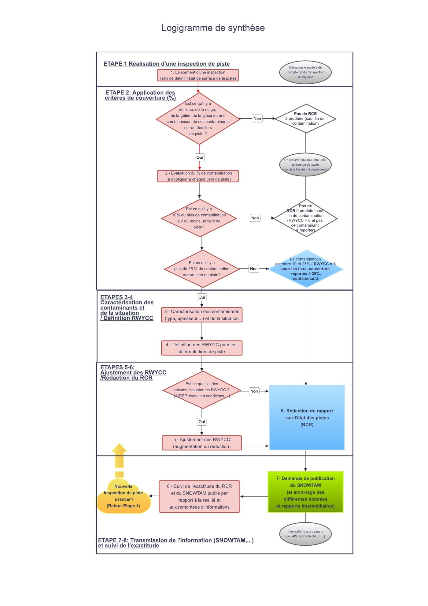

Module 1 · The Global Reporting Format
Lesson 02: The New System: Actors and Key Changes
Lesson 2 of 10 · about 12 min
Learning objectives
- Describe the role of each actor in the GRF.
- List the main changes: definitions, RCAM, RWYCC, RCR, SNOWTAM.
- Describe the general process from inspection to publication.
Who does what
| Actor | Role |
|---|---|
| Aerodrome operator | Inspects the movement area, assesses the surface, assigns the RWYCC with the RCAM, writes the RCR, requests the SNOWTAM, collects pilot reports |
| Air traffic services (ATS) | Pass the RCR to pilots by radio and ATIS; pass AIREPs to the aerodrome operator |
| Aeronautical information service (AIS) | Publishes the SNOWTAM (new format) |
| Pilots | Use the information; report the braking action (AIREP) to ATS |
| Aircraft manufacturer | Provides performance data linked to the RWYCC (Annex 8) |
| Airline | Assesses aircraft braking performance; updates its procedures (Annex 6) |

Key definitions
Tap a card to turn it over.
The main changes
- New definitions: four runway surface states (dry, wet, slippery wet, contaminated) and standard contaminant descriptors.
- RCAM to assign a RWYCC per third, and compare the aerodrome's observations with pilot reports.
- RCR, evolving with the situation and used by pilots, published all year — not only in winter.
- New SNOWTAM format, new information content and new update criteria.
- Friction measurements are no longer reported.
The general process
- Runway inspection and analysis of the observations (coverage criteria).
- Characterisation of the situation with the RCAM: initial RWYCC (Module 2).
- Collection of data (AIREPs…) and adjustment of the RWYCC (Module 2).
- Writing the RCR (Module 3).
- Transmission of the information (SNOWTAM, ATS, ATIS) and follow-up of its accuracy (Module 4).

Key takeaways
- Aerodrome assesses and reports; ATS and AIS transmit; pilots use and report.
- New: RCAM, RWYCC per third, RCR all year, new SNOWTAM, no friction values.
- Process: inspect → RCAM → adjust with AIREPs → RCR → SNOWTAM/ATS → follow-up.
Knowledge check
May runway inspectors use their own definitions of the surface condition in a GRF RCR?
- Yes
- No — standard descriptors are mandatory
- Only in summer
- Only for the situational awareness section
Answer: B. The GRF uses standardised terms and codes only.